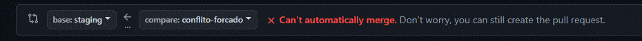
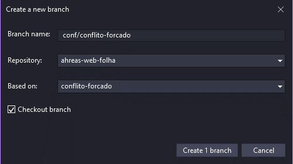
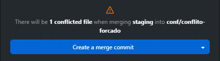
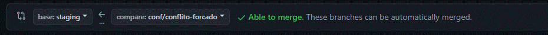

Sobre
O bit-flow é um sistema (e quem sabe uma futura extensão) para o git que pretende, utilizando um único branch de desenvolvimento, otimizar o controle do fluxo de branches que utilizam um ambiente de testes e produção, identificados a partir daqui como Staging e Master respectivamente
Instalação
Nada aqui ainda
Feat
Como implementar um feat?
- O desenvolvimento de um feat começa sempre com base no branch Master
- Ao concluir o desenvolvimento, deve-se criar um pull-request no branch Staging
- Em caso de rejeição ou ajustes as alterações devem ser realizadas no próprio branch e criar um novo pull-request
- Quando aprovado deve-se criar um pull-request para seu respectivo Release
Fix
Como desenvolver um fix?
- O fix de uma ocorrência começa sempre com base no branch Master
- Ao concluir o desenvolvimento, deve-se criar um pull-request no branch Staging
- Em caso de rejeição ou ajustes as alterações devem ser realizadas no próprio branch e criar um novo pull-request
- Quando aprovado deve-se criar um pull-request para seu respectivo Release
Release
Como lançar um release?
- Uma nova versão começa sempre com base no branch Master
- Mergear nesse branch todos os braches que deseja liberar nesse Release
- Excluir os branches mergeados nesse Release, assim reduzindo a quantidade de branches existentes
- Caso necessite ajustes as alterações devem ser realizadas em um branch Release/Fix com base no branch Release e criar um novo pull-request
- Após validar deve-se criar um pull-request para os branches Staging e Master
Release/Fix
Como corrigir um release?
- O fix de uma versão começa sempre com base no branch do respectivo Release
- Ao concluir o desenvolvimento, deve-se criar um pull-request no branch do respectivo Release
Conflitos
Como solucionar conflitos?
-
A resolução de conflitos inicia ao tentar criar o pull-request de seu branch, e no comparativo é exibida a mensagem que não poderá ser mergeado automaticamente
-
Nesse momento devemos abandonar esse pull-request e criar um novo branch com base no seu branch, nomeando o mesmo no padrão de prefixo "conf/", o identificando como branch de conflito: Conf
-
Já no novo branch iremos mergear a branch de destino e resolver os conflitos que surgirem
-
Após concluir os conflitos no novo branch, criar o pull-request do novo branch para o branch de destino, nesse momento não devem existir conflitos
Dicas
Nada aqui ainda
Downloads
Nenhum download disponível